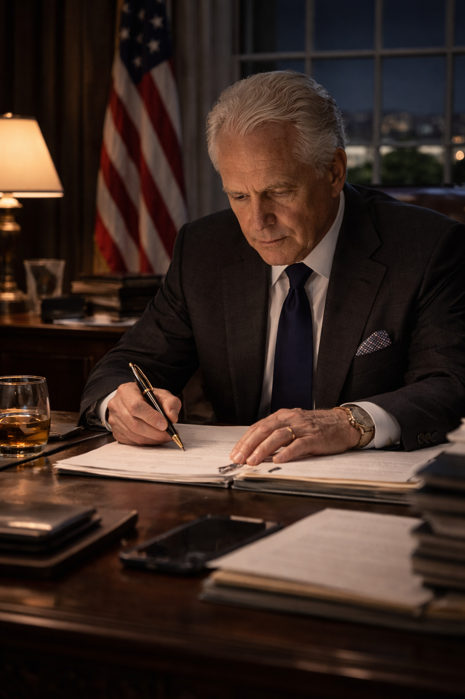
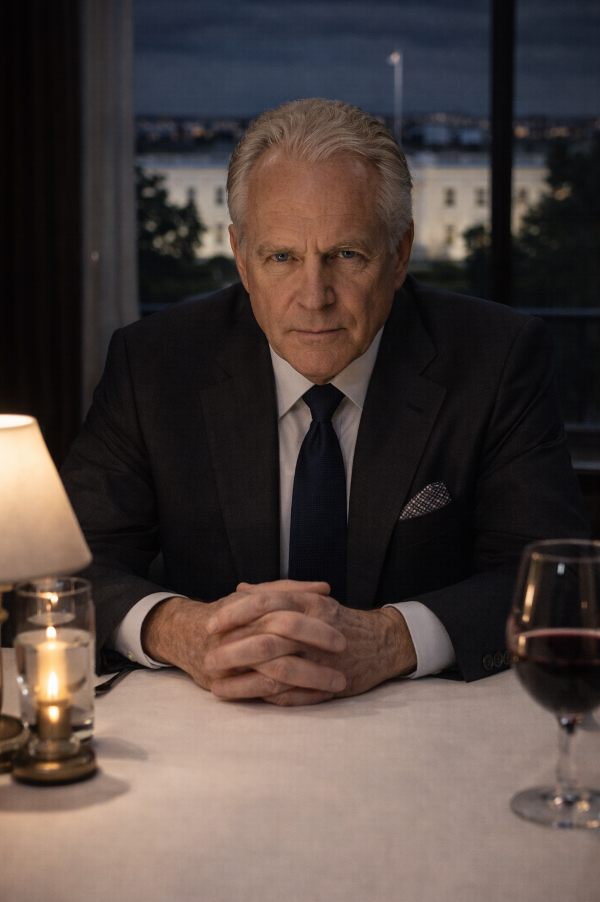
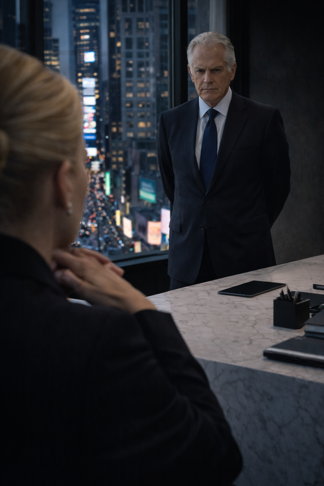
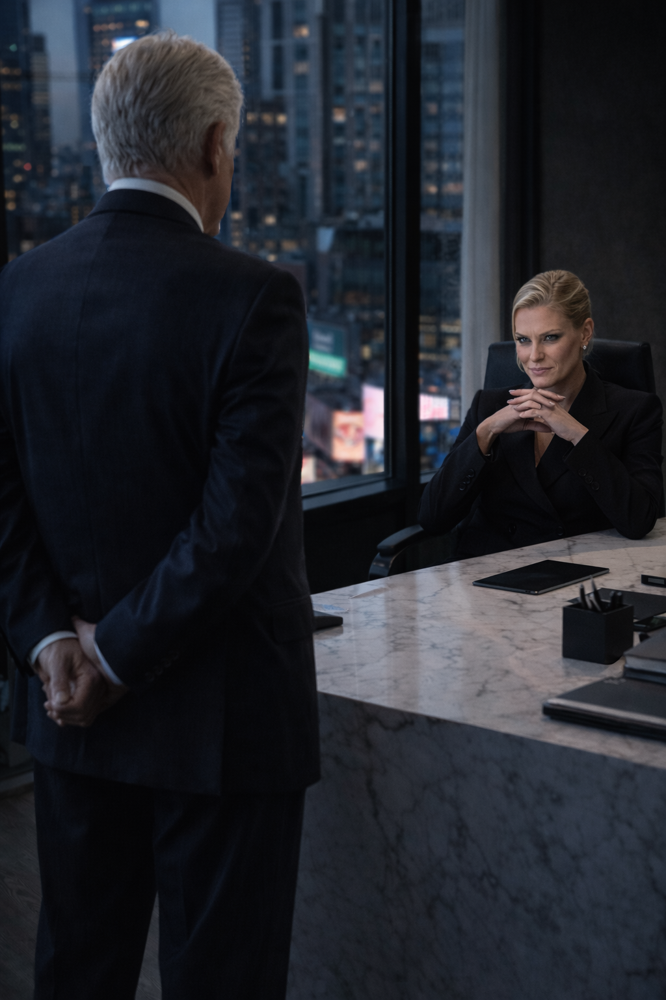

The Armor
Charcoal / Power / Bespoke
The Shark of Wall Street · Dossier
Leland Sterling — Federal Oversight Committee

Nicolás Reyes used hitmen. The Shark used algorithms. Leland Sterling used the absolute, crushing weight of the United States Government.
As the Chairman of the Federal Oversight Committee, Sterling was the man who whispered in the President's ear. He didn't exist in the tabloids, and his name was rarely spoken on cable news networks. True power in Washington doesn't demand a microphone; it demands a signature. Sterling possessed the terrifying ability to freeze a billionaire's assets, launch a DEA task force, or bury a multinational corporation under a mountain of SEC subpoenas with a single stroke of his Montblanc fountain pen.
He was sixty years old, impeccably groomed, and moved with the slow, deliberate grace of a man who owned the board. He wore bespoke charcoal suits that cost more than an imported sedan, and he viewed the financial warfare of Wall Street as a mildly amusing chess match played by his inferiors.
But the tectonic plates of global finance were shifting. When the intelligence agencies picked up the sudden, violent movement of three billion dollars vanishing from the Obsidian Cartel's ledgers and reappearing in the shadow banks, Sterling didn't dispatch the FBI to arrest the culprits.
He wanted the money for himself.
The invitation was delivered to Sloane Kensington in a blank ivory envelope, handed to her by a man in a gray trench coat outside her Tribeca apartment. It wasn't a subpoena. It was a summons to a private dining room at the Hay-Adams Hotel in Washington D.C., overlooking the White House.
When Sloane walked into the dimly lit room, Sterling was already seated. He was cutting a perfectly seared filet mignon, a glass of 1982 Bordeaux resting beside his plate.
"Ms. Kensington," Sterling murmured, not looking up from his steak. "I have followed your sudden departure from Obsidian Capital with immense interest. Sit down."
Sloane didn't flinch. She took her seat across from the most dangerous politician in America, her posture razor-straight. "I'm afraid I don't have much of an appetite, Chairman. What does the Federal Oversight Committee want with a newly independent financial consultant?"
Sterling finally looked up. His eyes were the color of slate, and entirely devoid of warmth.
"I am not a man who appreciates theater, Sloane," Sterling said smoothly, dabbing his mouth with a linen napkin. "The SEC believes your former employer, Nicolás Reyes, suffered a massive cyberattack. The CIA believes an Iranian state-sponsored hacking collective stole his liquidity. But I know the truth. I know about The Shark. I know about the submarine parked at the bottom of the Hudson River. And I know about the three billion dollars your little crew just washed."
Sloane's blood ran cold, but her expression remained an immaculate mask of polite confusion. "I have no idea what you're talking about."
"Of course you don't," Sterling smiled—a thin, bloodless expression. "But here is the reality of your situation. Reyes has dispatched hit squads to tear Manhattan apart looking for you. The moment you try to move that three billion out of your dark pools, the FBI will freeze it. You are trapped between a cartel executioner and a federal penitentiary."

Sterling leaned forward, resting his elbows on the crisp white tablecloth. The terrifying aura of his power filled the room, suffocating the oxygen.
"I am offering you a third option," Sterling whispered. "You are going to wire that three billion dollars into a classified discretionary fund controlled by my committee. In exchange, I will issue a targeted drone strike on Nicolás Reyes's compound in Mexico, courtesy of the Department of Defense. I eliminate your cartel problem. You buy your freedom. And the Deep State gets its operating budget for the next decade."
Sloane stared at him. The sheer, terrifying corruption of the offer was breathtaking. He wasn't enforcing the law; he was robbing the robbers.
"And if we refuse?" Sloane asked, her voice dangerously quiet.
Sterling picked up his wine glass. "Then tomorrow morning, I sign an executive order labeling your boss a domestic terrorist. I'll send the military to drag that submarine out of the Hudson, and I'll let Reyes's hitmen pick off whoever survives the breach."
He took a sip of the Bordeaux, his slate eyes locked onto hers.
"Tell The Shark he has forty-eight hours to pay his taxes, Ms. Kensington. Enjoy your evening."
Leland Sterling did not visit people. People were summoned to him. But the sweeping, glass-walled corner office of Axiom Global Media in Manhattan was the one exception to his rule.
He needed the American public to believe Nicolás Reyes was an imminent national security threat to justify a sudden military drone strike on Mexican soil. And to sell that lie, he needed the megaphone. He needed his daughter.

He stood by the floor-to-ceiling window of Axiom headquarters, looking down at the crawling traffic of Times Square. Behind him, sitting behind a massive desk of pure white marble, was Camilla. She was thirty-four, wearing a sharp, asymmetrical Tom Ford suit, her dark hair cut in a severe, flawless bob. She was reviewing a digital tablet, deliberately making her father wait.
"I need your prime-time anchors to pivot at eight o'clock," Leland said, his voice a low, gravelly hum. He didn't turn around. "I need a breaking news banner. The Obsidian Cartel is no longer a narcotics problem. They have acquired weaponized drones and are planning to strike power grids in Texas. It needs to be presented as an imminent national security crisis."
Camilla didn't look up from her tablet. "No."
Leland finally turned, his slate-gray eyes narrowing. The temperature in the room seemed to drop ten degrees. "Excuse me?"
"You heard me, Dad," Camilla said, tossing the tablet onto the marble desk. She leaned back, resting her chin on her steepled hands, a shark-like smile playing on her lips. "I'm not running that garbage. My analysts already looked into the cartel chatter. Reyes isn't buying drones. He's bleeding liquidity. Someone just robbed him blind, and the entire underworld is panicking."
Leland’s jaw clenched. "You will run the narrative I give you, Camilla. It is a matter of state security."
"It's a matter of your bank account," Camilla shot back, her voice ringing like a bell across the massive office. She stood up, walking around the desk, her heels clicking against the hardwood. She was exactly his height in her stilettos, and she met his furious glare without an ounce of fear. "You're trying to use the Department of Defense as your personal collection agency. You want to blow Reyes off the map so you can steal the money that was stolen from him. And you want me to write the press release."
"If I go down, this network goes down with me," Leland whispered, a raw, venomous threat. "I will sign a federal warrant for SEC violations on your parent company before my car reaches the lobby."

Camilla laughed. It was a cold, terrifying sound. She walked over to her private bar and poured herself a sparkling water.
"Do it," she dared him, taking a sip. "Sign the warrant. And while your agents are in the elevator, I will interrupt every single broadcast in North America to play the audio recordings of your little dinner at the Hay-Adams Hotel with Sloane Kensington. I wonder how the President will react when he hears his Oversight Chairman extorting Wall Street shadow banks for three billion dollars?"
Leland froze. For the first time in a decade, the Apex Predator of Washington had been completely outmaneuvered. He stared at his daughter, realizing she hadn't just tapped his phones—she had anticipated his exact play.
"What do you want, Camilla?" he finally rasped.
Camilla smiled, her eyes glittering with absolute, inherited ruthlessness. "When you get your hands on that three billion dollars... I want forty percent. Untraceable. Funneled into Axiom's European expansion funds. You pay the toll, Dad, or the world finds out exactly what hides in the shadows."
The Power Apparatus — Scene Objects